السلسلة 124
السيارة (صنف B) · 40 سؤال بالصوت. حاول تجاوب بوحدك، من بعد شوف الجواب.
السؤال 1
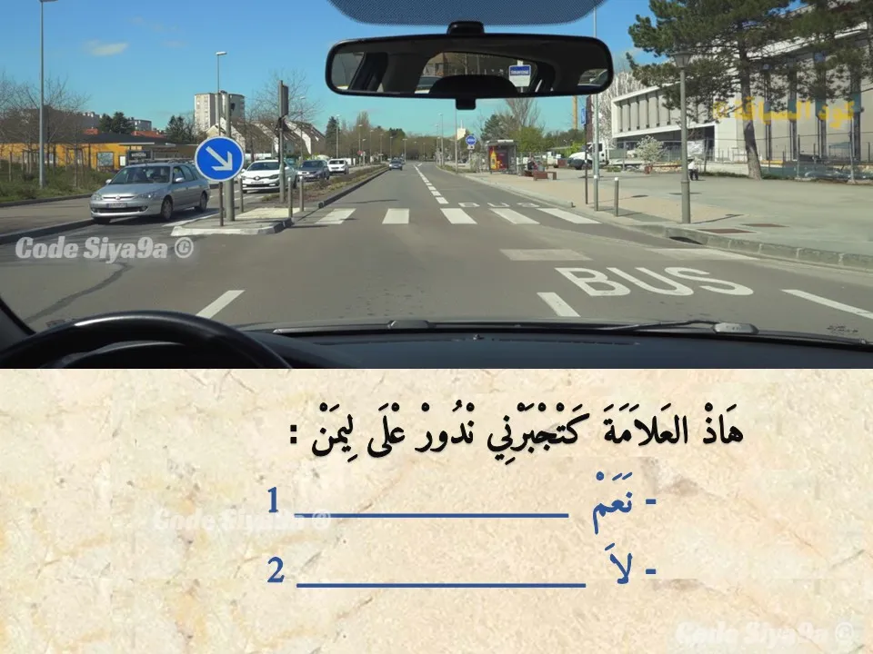
بيّن الجواب
الجواب الصحيح: 2
هذا العلامة ديال الاجبار. كتعلم على طريق واحد فقط من الطريقين. يمكن استعمالها, باش نكمل السير للقدام.
- يعني في الحالة واجب عليا الا كنت غادي نكمل السير للقدام نمشي في هذا الطريق لي انا فيها . و ممنوع عليا نستعمل المسلك ديال لي جايين في الاتجاه المعاكس.
السؤال 2
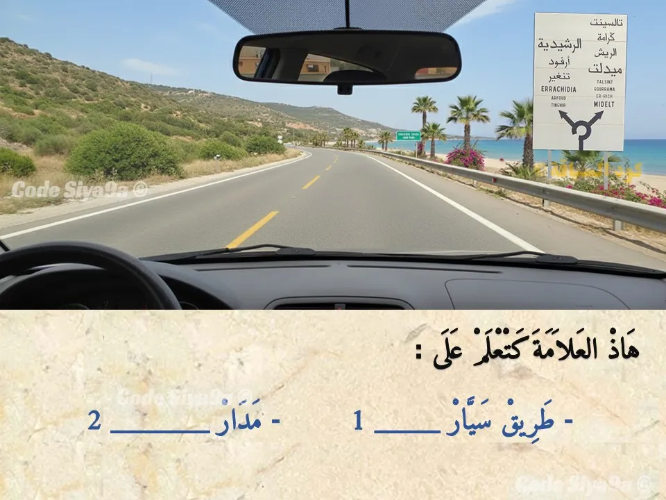
بيّن الجواب
الجواب الصحيح: 2
هذا العلامة ديال الاتجاه . كتعلم على مدار مع تبين الاتجاه ديال كل طريق فين غادي تمشي .
السؤال 3
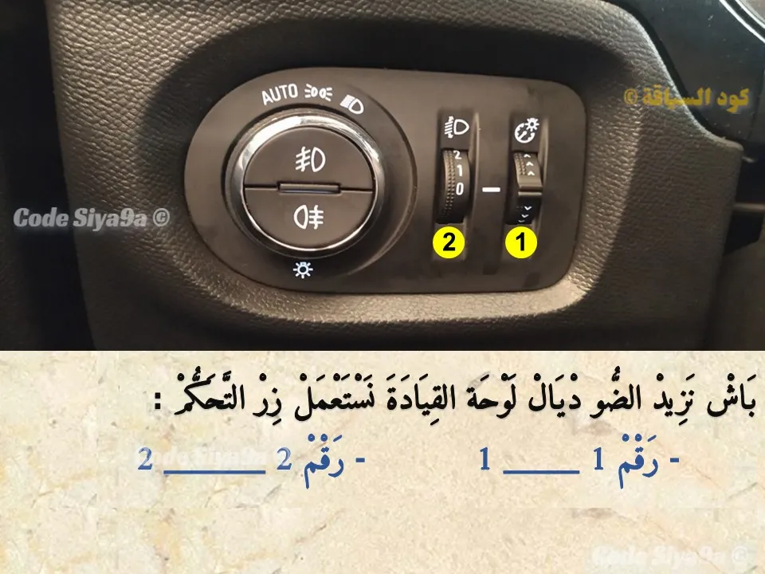
بيّن الجواب
الجواب الصحيح: 1
- الزر رقم 1 كيمكن من ضبط شده اضاءه لوحه القياده.
- الزر الثاني كيمكن من ضبط علو شعاع الاضواء الاماميه.
- باش نضبط شدة اضائة لوحة القيادة واحب عليا نستعمل الزر رقم 1
السؤال 4
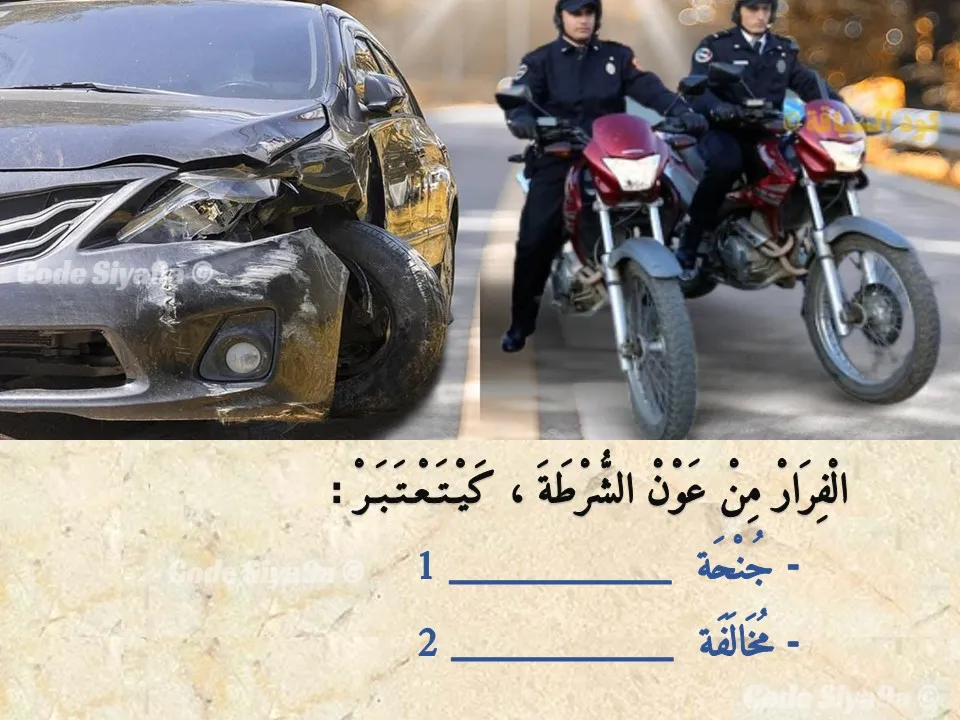
بيّن الجواب
الجواب الصحيح: 1
الفرار من عون الشرطه كي تعتبر جنحه
السؤال 5
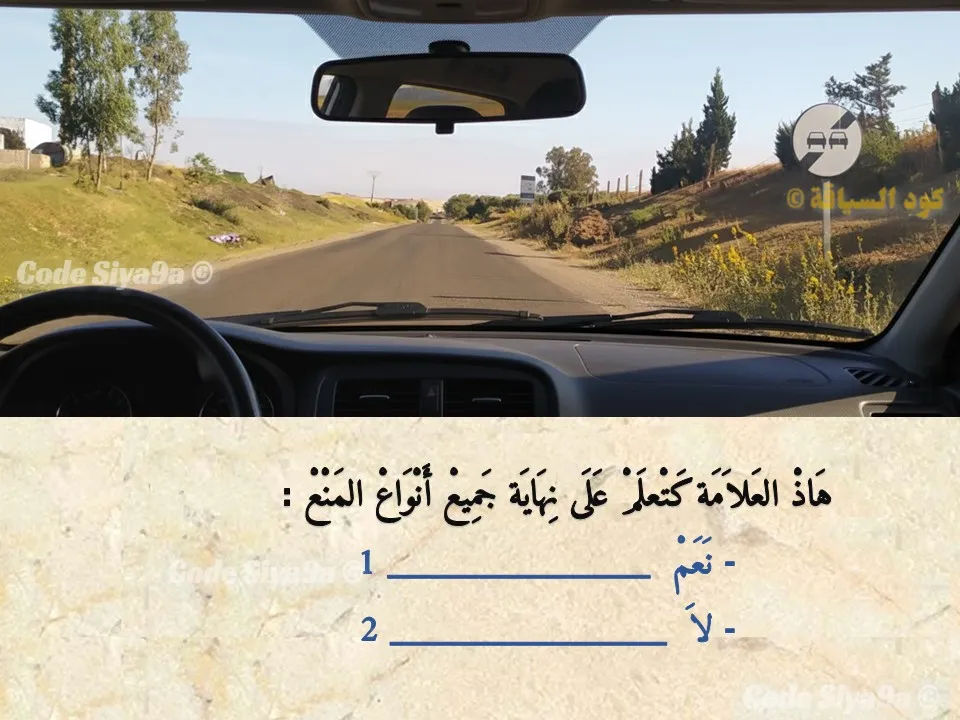
بيّن الجواب
الجواب الصحيح: 2
هذه العلامه ديال نهايه منع التجاوز.
- كتعلم باللي تجاوز اصبح مسموح به. هذه العلامه ماشي علامه ديال نهايه جميع انواع المنع.
السؤال 6
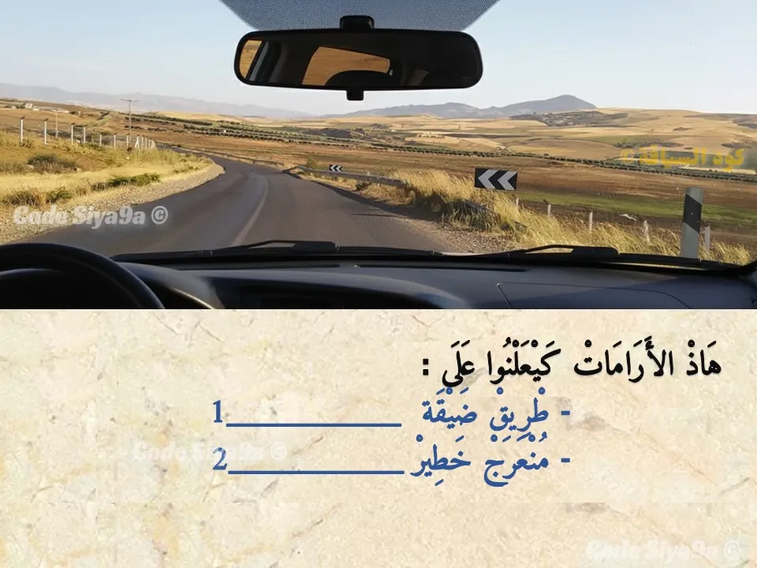
بيّن الجواب
الجواب الصحيح: 2
هذه العلامه كتعلم على منعرج خطير على اليسر.
السؤال 7
بيّن الجواب
الجواب الصحيح: 1
هذا العلامة ديال الاتجاه . كتعلم على مدار مع تبين الاتجاه ديال كل طريق فين غادي تمشي .
- باش نمشي الميدلت في هذه الحاله هذه خاصني نستعمل الخرجه رقم 1.
السؤال 8
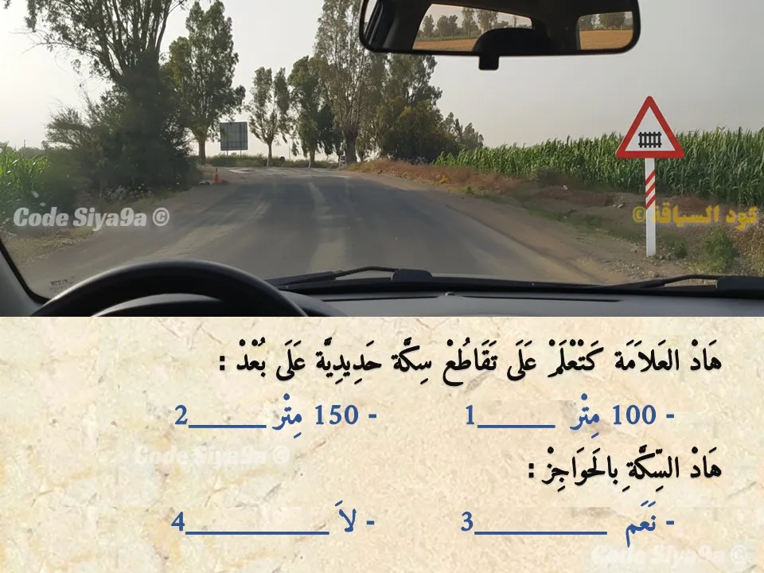
بيّن الجواب
الجواب الصحيح: 2 و 3
هذه العلامه ديال الخطر. كاتعلم على تقاطع السكه حديدية بالحواجز.
- الارامه اللي في الاسفل فيها ثلاثه ديال الخطوط كيعني ان الممر كايتواجد على بعد 150 متر.
السؤال 9
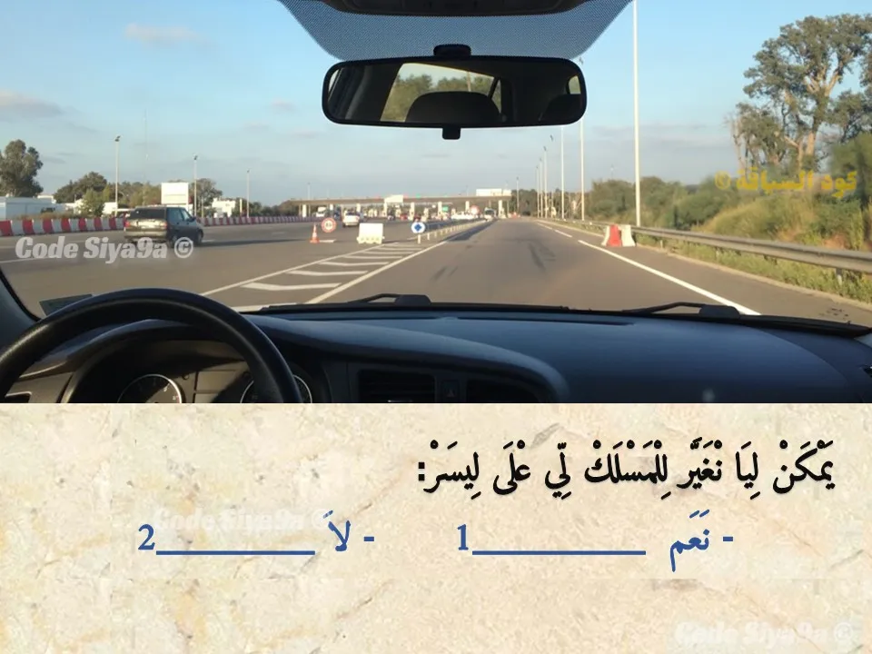
بيّن الجواب
الجواب الصحيح: 2
في هذه الحاله المسلك اللي على اليسار كاتفصلني بيني وبينه خطوط متصله بالتالي ممنوع علي انني نتخطاهم.
السؤال 10
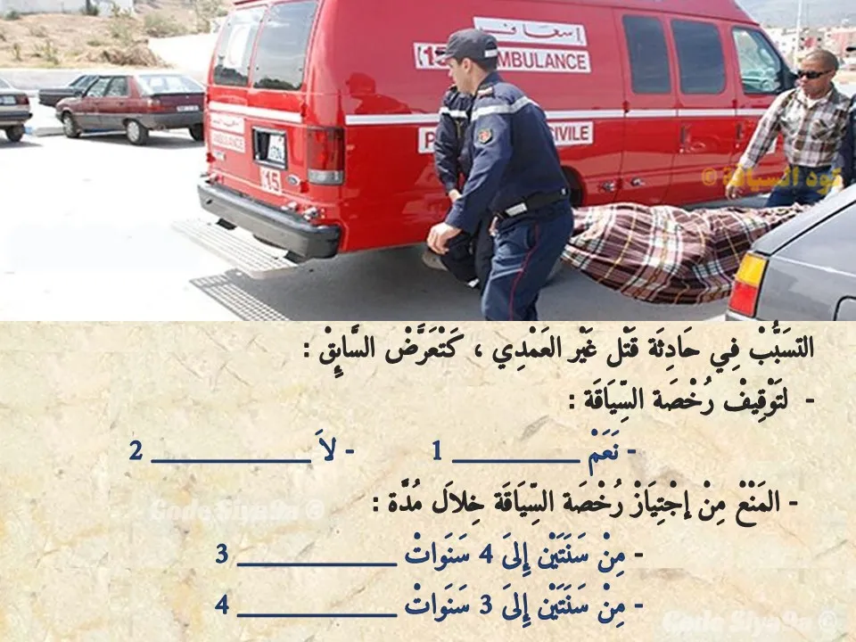
بيّن الجواب
الجواب الصحيح: 1 و 3
التسبب حادثه القتل غير العمدي كي تعتبر جنحه كتعرض سائق:
- لتوقيف رخصه السياقه لمده من سنة الى ثلاث سنوات.
- وغرامه ماليه من 7500 الى 30,000 درهم.
- الحبس من ثلاث اشهر الى خمسه اشهر.
- المنع من اجتياز امتحان الحصول على رخصه السياقه جديده لمده تتراوح ما بين سنتين الى اربع سنوات.
ـ مع الزاميه الخضوع لدورة في التربيه على السلامه الطرقيه في بعض الحالات
السؤال 11
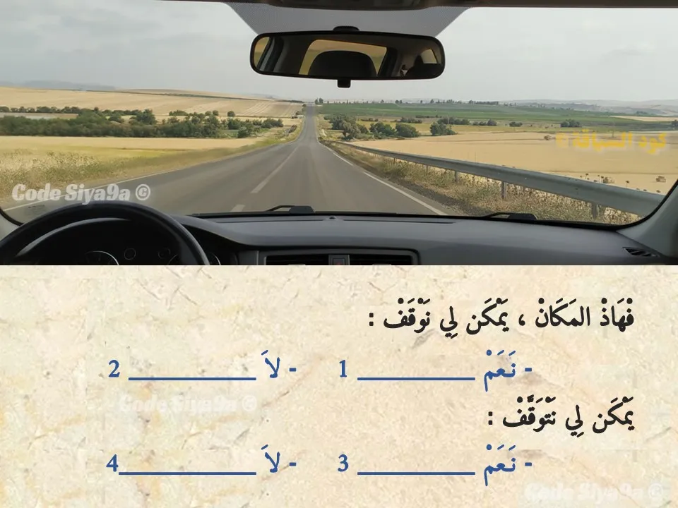
بيّن الجواب
الجواب الصحيح: 2 و 4
في جنب الطريق ما عنديش مساحه كافيه باش انني نوقف او نتوقف. وبالتالي في هذا المكان ما يمكنش لي نوقف او نتوقف . حيت غادي نتسبب في عرقله حركه السير.
السؤال 12
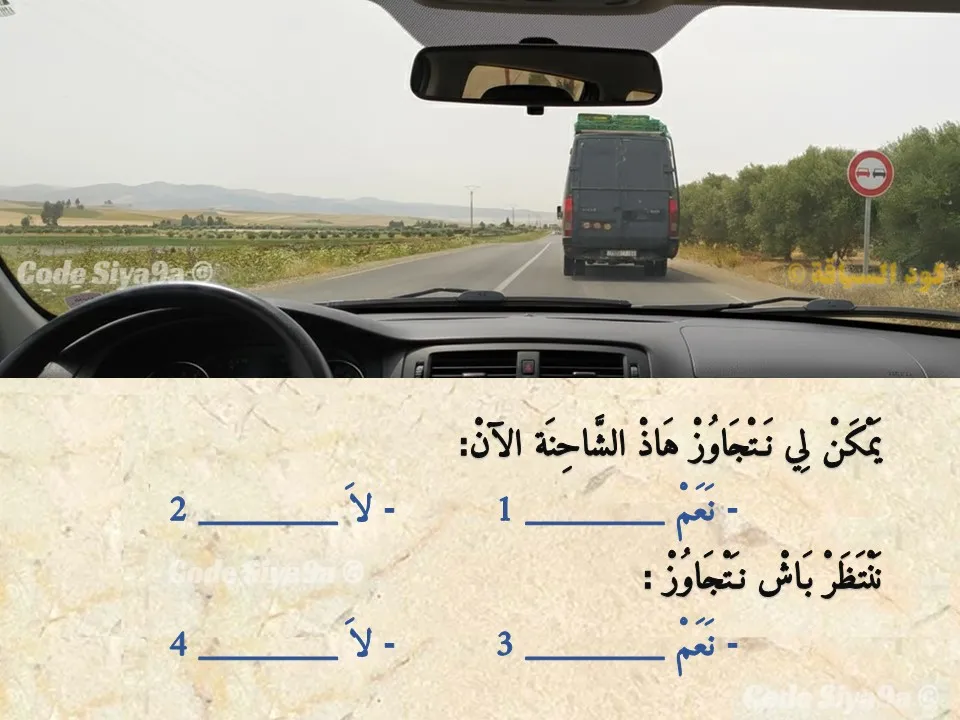
بيّن الجواب
الجواب الصحيح: 2 و 3
- في هذه الحاله عندي علامه ديال المنع كاتمنع التجاوز على جميع المركبات ذات محرك.
- بالاضافه لوجود خط متصل.
- وبالتالي في هذه الحاله ما يمكنش لي نتجاوز.
السؤال 13
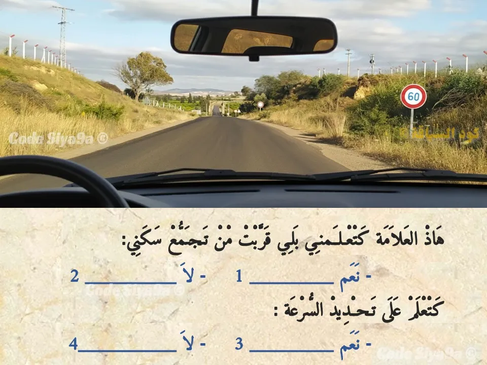
بيّن الجواب
الجواب الصحيح: 2 و 3
هذه العلامه ديال تحديد السرعه كتعلم على ان السرعه محدوده في 60 كلم في الساعه.
السؤال 14
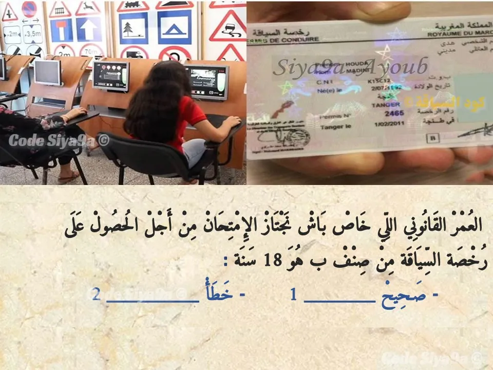
بيّن الجواب
الجواب الصحيح: 1
العمر القانوني اللي خاص باش نجتاز الامتحان من اجل الحصول على رخصه السياقه من صنف ب هو 18 سنه.
السؤال 15
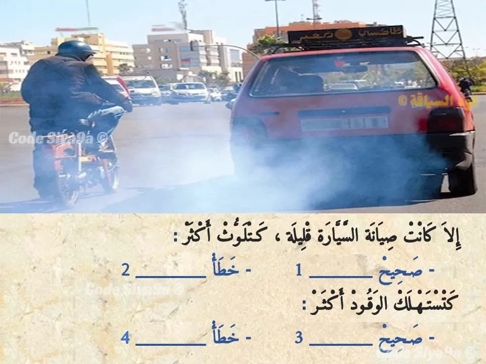
بيّن الجواب
الجواب الصحيح: 1 و 3
اذا كان صيانه السياره قليله كاتكون كاتستهلك الوقود اكثر وبالتالي كادير انبعاثات ديال الغاز العادم اكثر.
السؤال 16
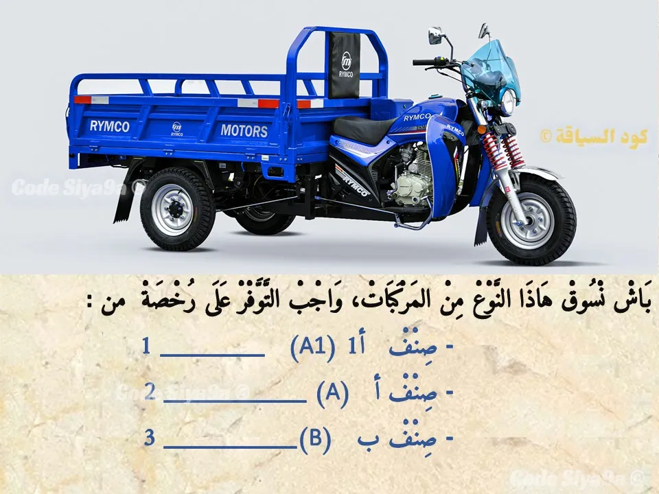
بيّن الجواب
الجواب الصحيح: 3
باش نسوق هذا النوع ديال المركبات دراجات ثلاثيه العجلات من الواجب متوفر على رخصه السياقه من صنف ب.
السؤال 17
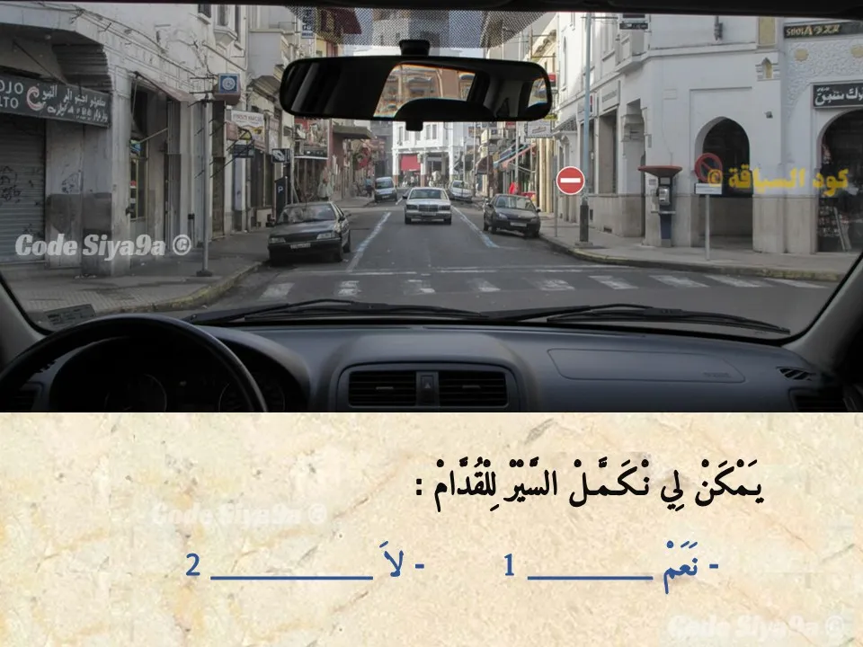
بيّن الجواب
الجواب الصحيح: 2
هذه العلامه ديال المنع كاتمنع الاستمرار في السير في هذا الاتجاه. وبالتالي ممنوع عليا نكمل السير في نفس الاتجاه للقدام.
السؤال 18
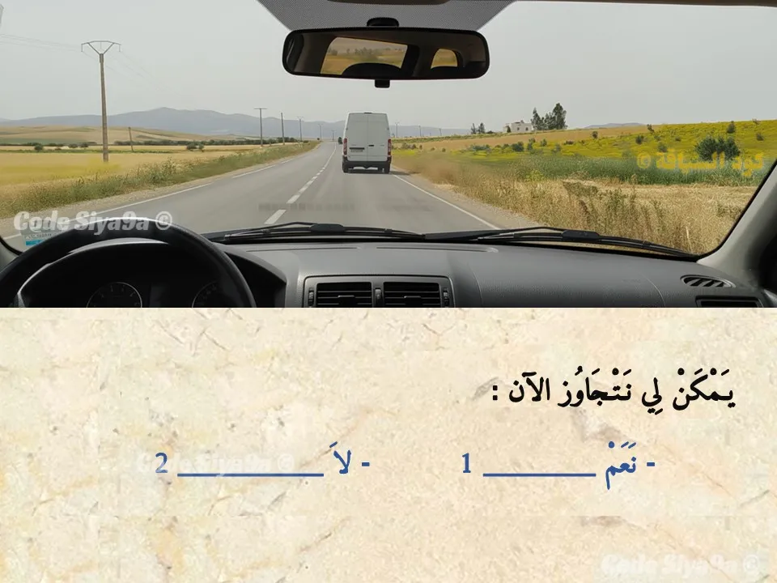
بيّن الجواب
الجواب الصحيح: 2
في هذه الحاله الخط اللي في الوسط متقطع ولكن نتقارب والا لاحظت القدام الخط غادي يصبح متصل. في هذه الحاله هذه ممنوع عليه انني نتجاوز.
السؤال 19
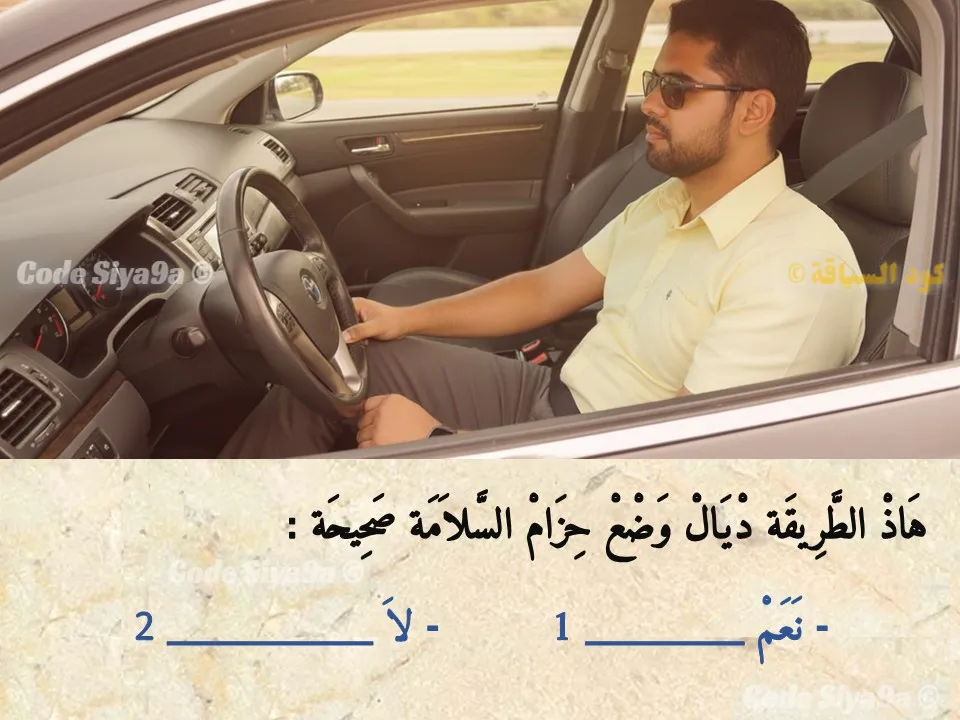
بيّن الجواب
الجواب الصحيح: 2
الطريقه الصحيحه لوضع حزام السلامه واجب يكون دايز فوق الكتف وفوق الصدر و وفوق الخصر.
في هذه الحاله هذا السائق وضع حزام السلامه خلف الظهر دياله وبالتالي هذه الطريقه غير صحيحه لوضع حزام السلامه.
السؤال 20
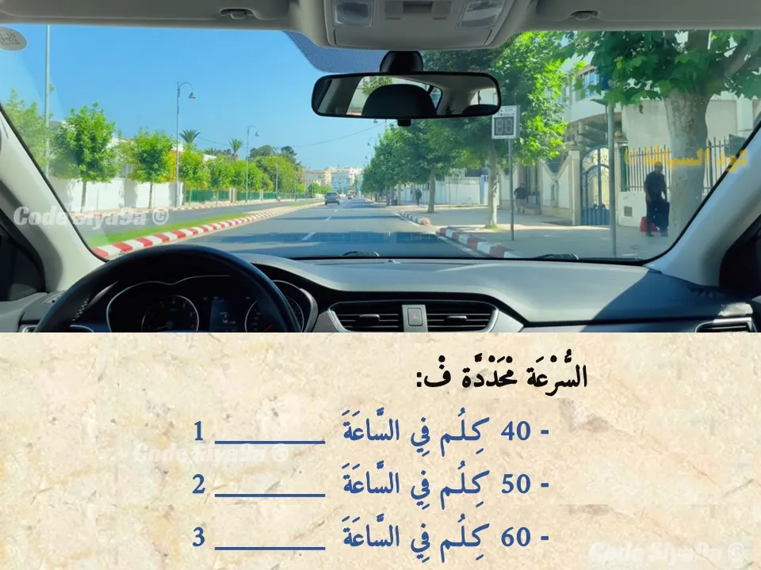
بيّن الجواب
الجواب الصحيح: 3
داخل التجمع السكني السرعه كاتكون محدوده في 60 كلم في الساعه.
السؤال 21
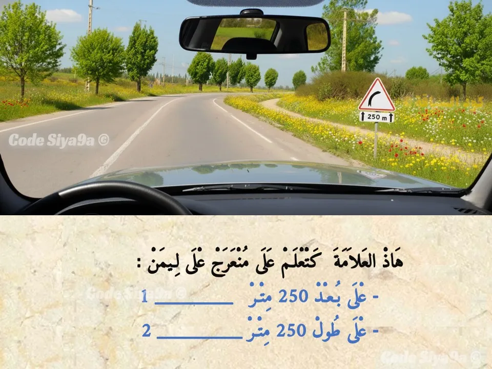
بيّن الجواب
الجواب الصحيح: 2
هذه العلامه ديال الخطر. كتعلم على منعرج على ليمن .
- تحميل العلامه كاينه علامه تكميليه فيها 250 متر ، واسهم للاعلى. هذا العالم التكميليه كتعني ان الخطر كيمتد على طول 250 متر.
السؤال 22
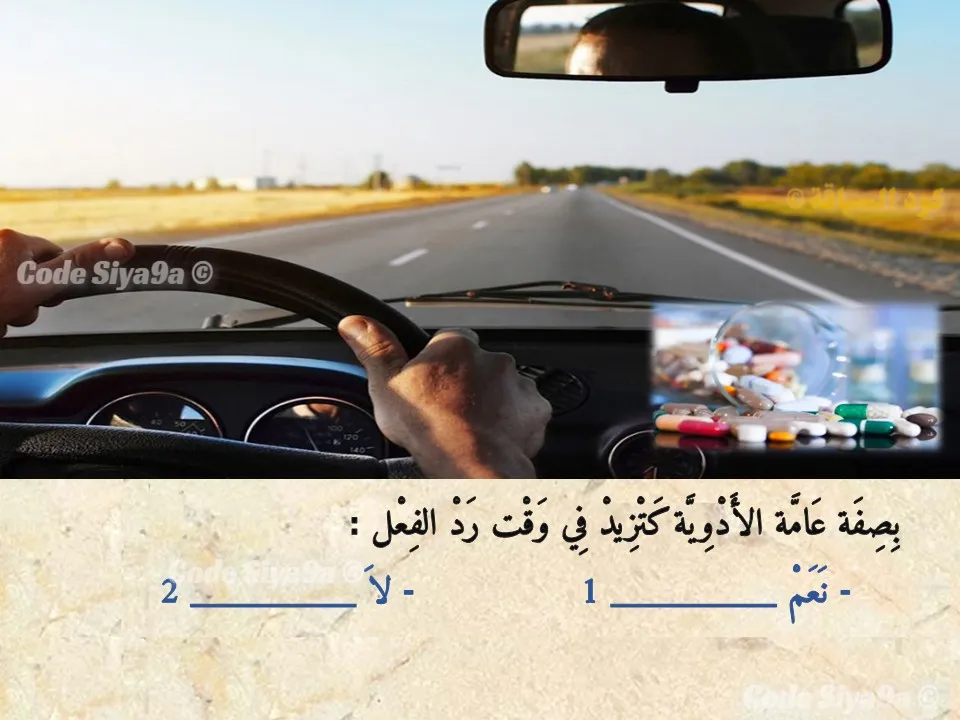
بيّن الجواب
الجواب الصحيح: 1
معظم الادويه اللي كاتعالج بعض الاعراض المرضيه كاتكون كتحتوي على مواد مهدئه ومخدره، :
--- كتخلي السائق يحس بالنعاس.
--- كتخلي السائق اقل انتباهه .
--- كاتقلل من ردود افعال.
السؤال 23
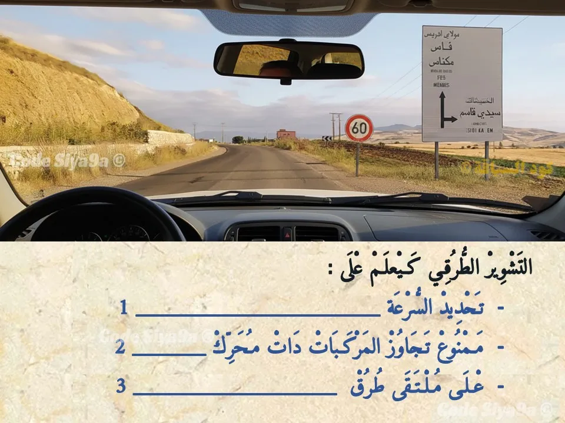
بيّن الجواب
الجواب الصحيح: 1 و 3
التشوير الطرقي كيعلم على ممنوع التجاوز المركبات ذات محرك.و وعلى ملتقى طرق.
السؤال 24
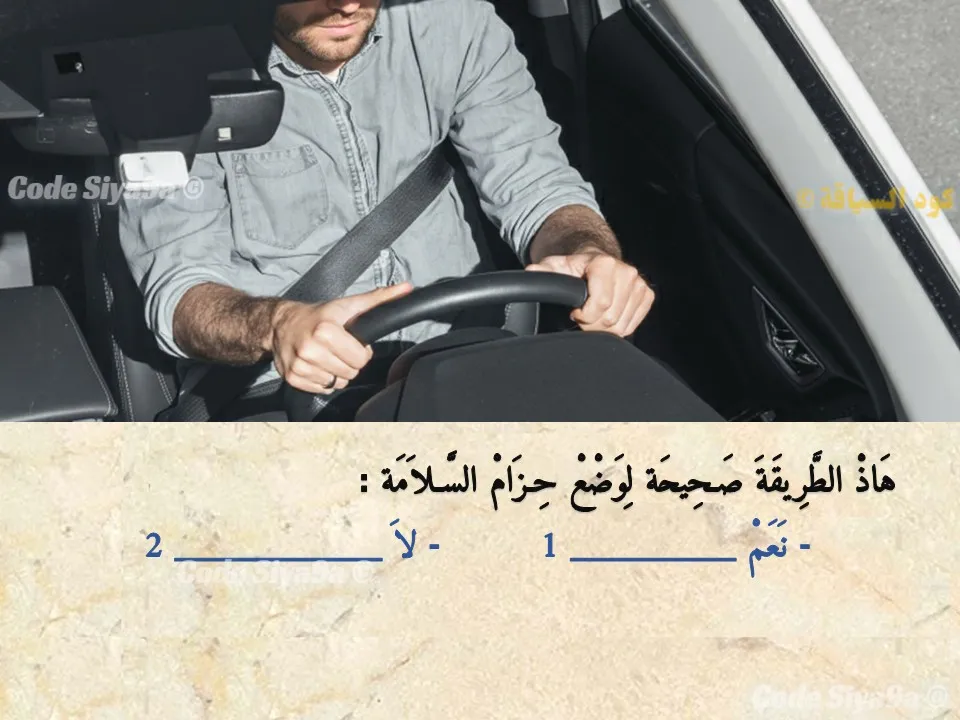
بيّن الجواب
الجواب الصحيح: 2
الطريقه الصحيحه لوضع حزام السلامه واجب يكون دايز فوق الكتف وفوق الصدر و وفوق الخصر.
في هذه الحاله هذا السائق وضع حزام السلامه تحت الكتف ديالوا وبالتالي هذه الطريقه غير صحيحه لوضع حزام السلامه.
السؤال 25
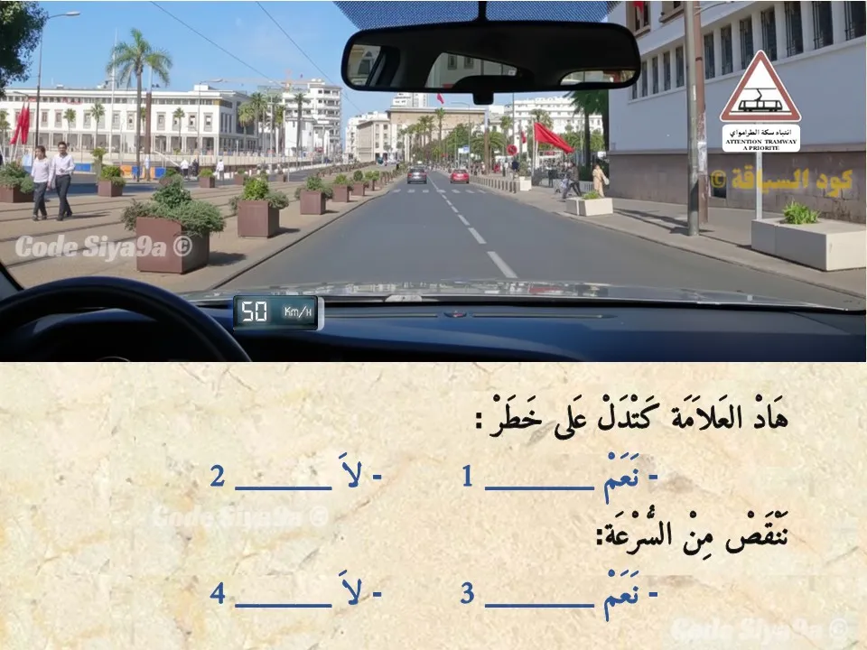
بيّن الجواب
الجواب الصحيح: 1 و 3
هذه العلامه ديال الخطر كتعلم على ممر سكه الترامواي على بعد 50 متر.
- في هذه الحاله واجب علي ننقص من السرعه.
السؤال 26
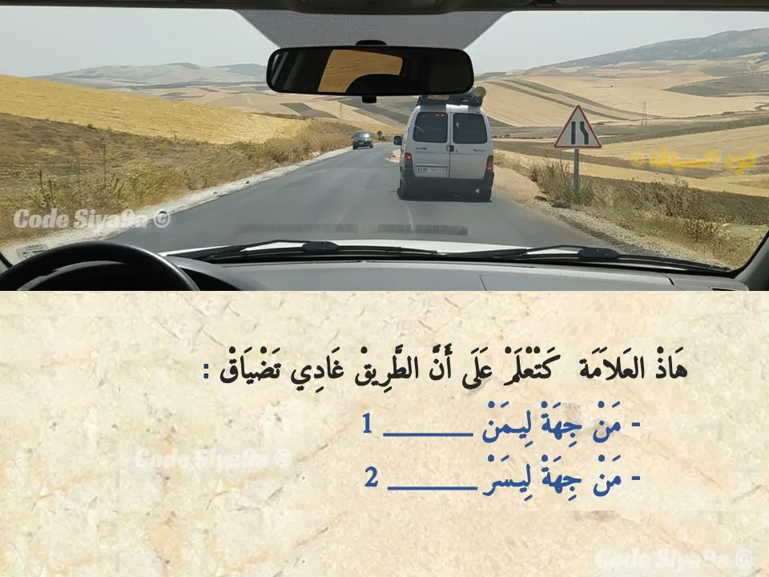
بيّن الجواب
الجواب الصحيح: 1
هذه العلامه ديال الخطر كتعلم على ان الطريق غادي تضياق من جهه اليمن.
السؤال 27
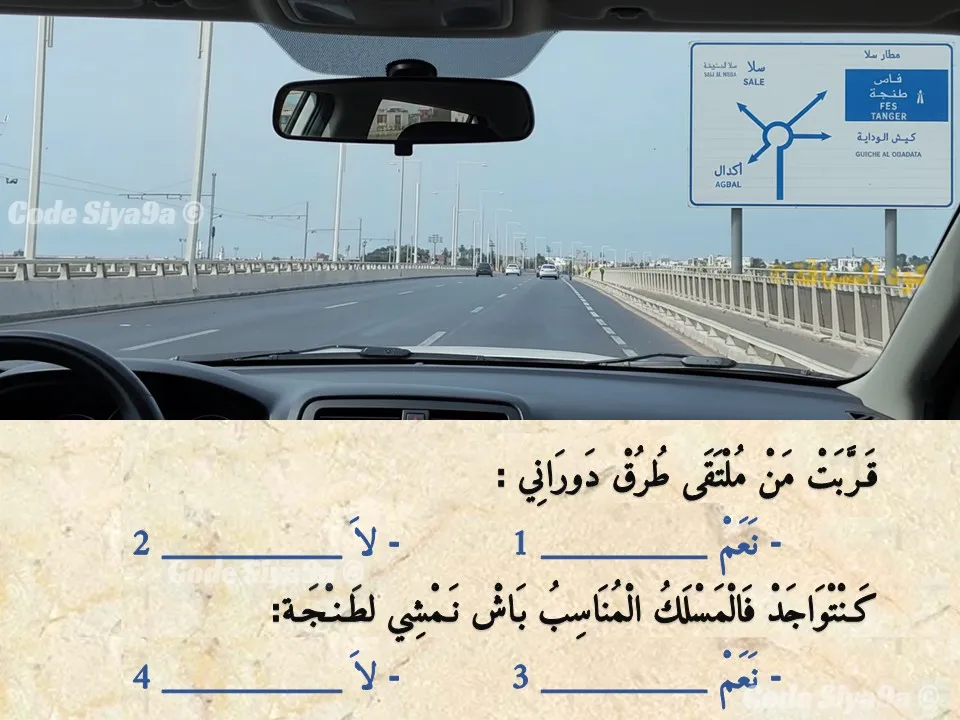
بيّن الجواب
الجواب الصحيح: 1 و 3
- التشوير الطرقي كيعلم على انني اقتربت من ملتقى طرق دوران مدار.
- باش نمشي للوجهه ديالي واجب علي انني ناخذ الخرجه المناسبه. باش ناخذ الخرجه المناسبه خاصني من دابا نستاعد.
- باش ناخذ الخرجه اللي كاتمشي لطنجه واجب عليا نستعمل الخرجه رقم 2 في هذا المدار.
- باش ناخذ الخرجة رقم 1 خاصني نبقى في هذا المسلك باش يسهل علي الخروج من المدار. يعني انا في المكان المناسب باش نمشي لطنجة.
السؤال 28
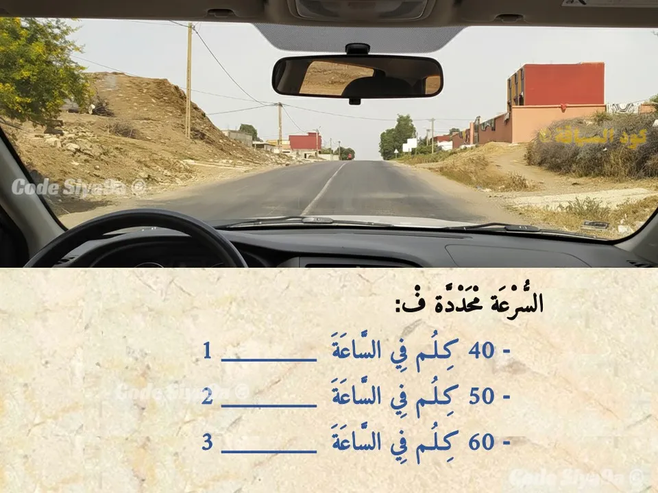
بيّن الجواب
الجواب الصحيح: 3
كانسير داخل تجمع سكني وبالتالي السرعه محدوده 60 كلم في الساعه.
السؤال 29
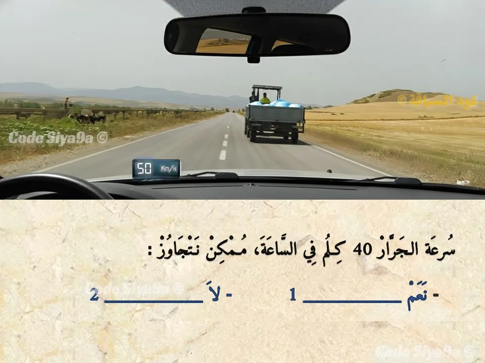
بيّن الجواب
الجواب الصحيح: 1
في هذه الحاله سرعه الجرار هي 40 كلم في الساعه، التشوير الطرقي كيضم خط متقطع وبالتالي يمكن لي نتجاوز في هذه الحاله هذه.
السؤال 30
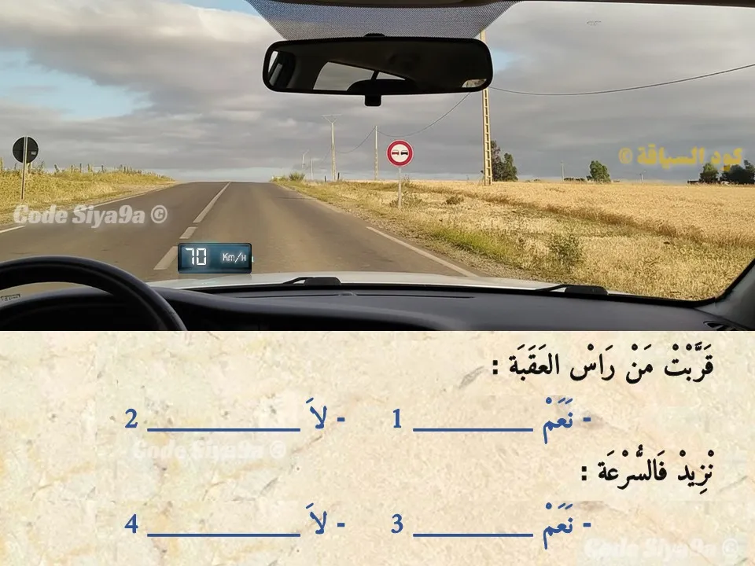
بيّن الجواب
الجواب الصحيح: 1 و 4
في هذه الحاله هذه انا قريب من راس العقبه وبالتالي واجب علي انني نكون منتبه الاخطار اللي ممكن انها تصادفني من بعد ما نوصل لراس العقبه.
- في هذه الحاله هذه باش ما نتفاجئش من بعد راس العقبه واجبه لي انني ننقص من السرعه.
السؤال 31
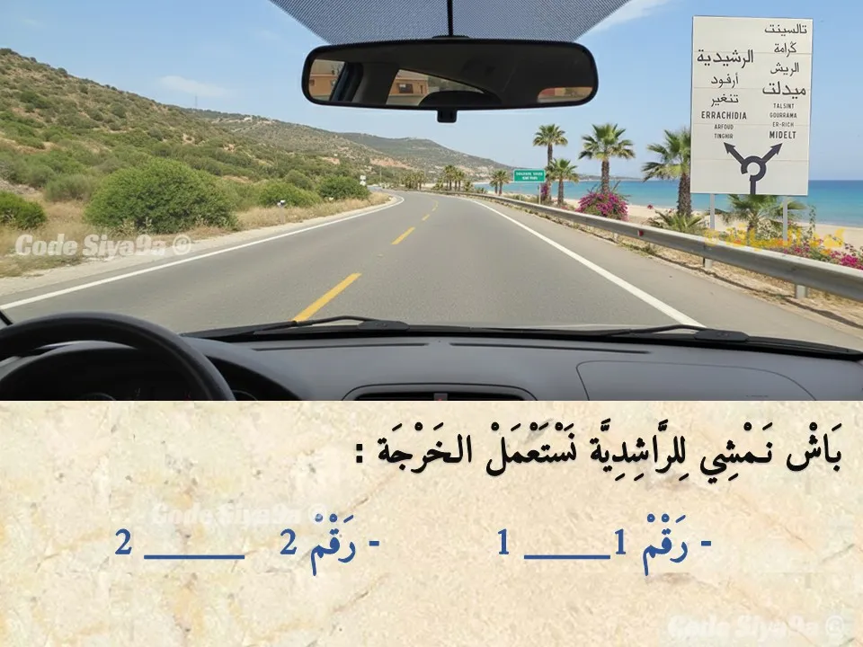
بيّن الجواب
الجواب الصحيح: 2
هذا العلامة ديال الاتجاه . كتعلم على مدار مع تبين الاتجاه ديال كل طريق فين غادي تمشي .
- باش نمشي الراشدية في هذه الحاله هذه خاصني نستعمل الخرجه رقم 2.
السؤال 32
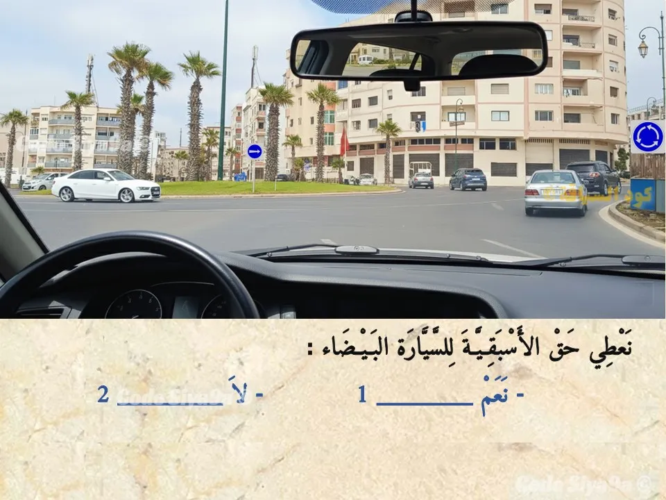
بيّن الجواب
الجواب الصحيح: 2
في هذا المدار عندي علامه وحدة ، ديال اجباري ندور على المدار من جهه اليمن، ما عنديش مثلث ديال اعطاء حق الاسبقيه وبالتالي والاسبقيه اللي جاي من اليمن ،في هذه الحاله .
- هذه الحاله اللي اليمين ديالو خاوي هو اللي كيدوز الاول.
- يعني السياره البيضاء واجب عليها تعطيني حق الاسبقيه في هذا المطار.
السؤال 33
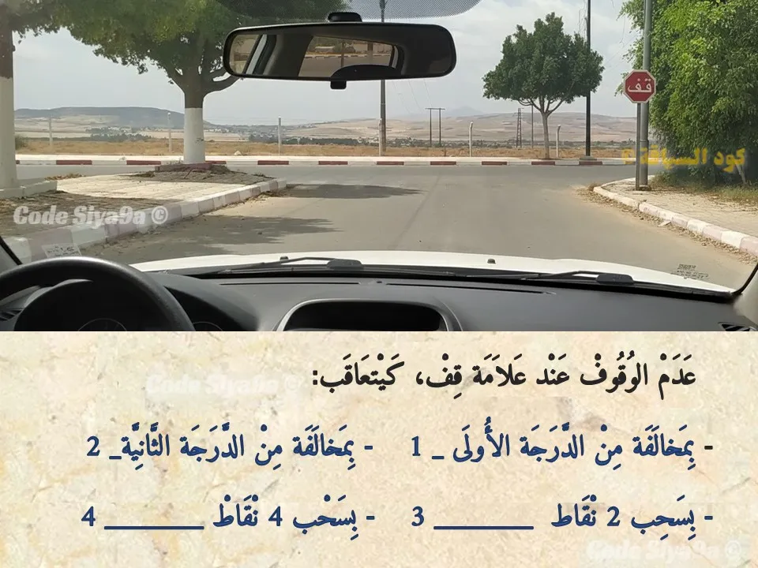
بيّن الجواب
الجواب الصحيح: 1 و 4
عدم الوقوف عند علامه قف كيتعاقب بمخالفه من الدرجه الاولى وسحب 4 ديال النقاط وكاتعرض سائق الغرامه ماليه 700 درهم.
السؤال 34
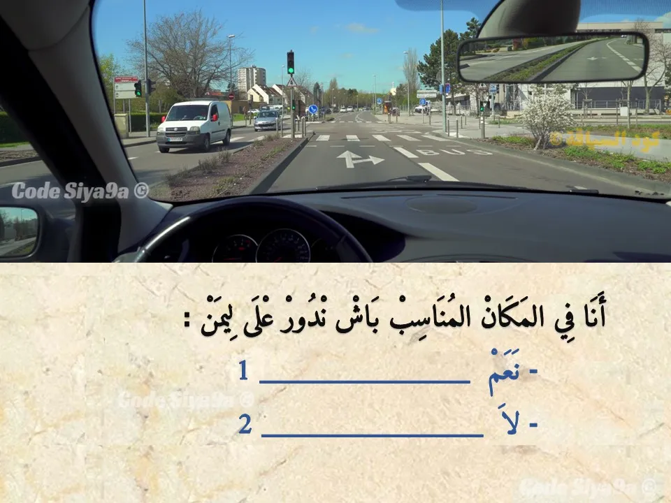
بيّن الجواب
الجواب الصحيح: 1
العلامات اللي مرسومه في الارض كتعلم باللي المسلك اللي اقصى اليمين هو مسلك خاص بالحافلات.
- اما المسلك اللي انا فيه دابا هو المسلك ديال السير العادي.
-الى لاحظت في الارض كاين جوج ديال الاسهم السهم اليمن وسهم للقدام.
ـ يعني في هذا المكان اللي انا فيه. يمكن لي ندور على اليمن ويمكن لي نكمل السير القدام.
السؤال 35
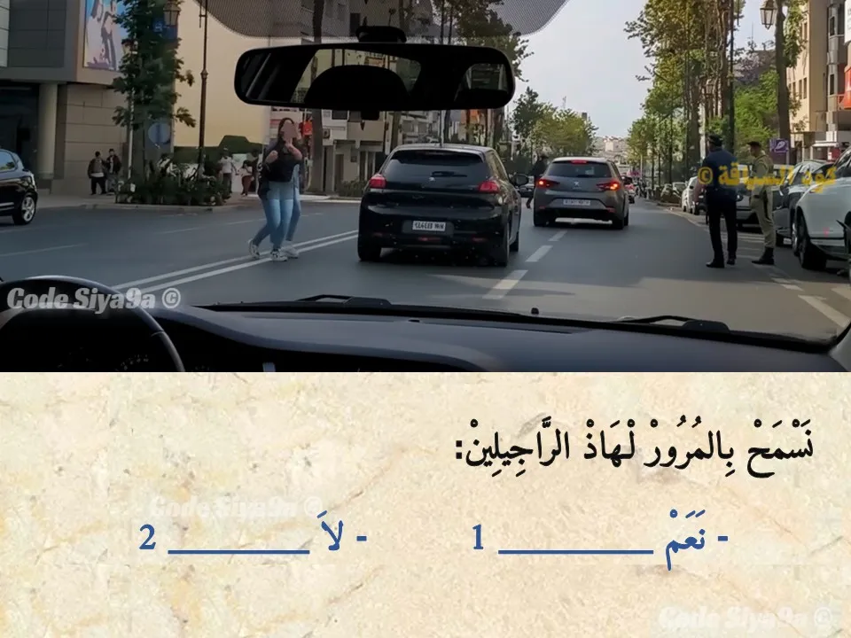
بيّن الجواب
الجواب الصحيح: 1
في هذه الحاله هذا الرجلين قاطعين الطريق. واخا ما عندناش الممر ديال الرجلين ولكن في هذه الحاله حيت هما قاطعين واجب علي نوقف ونعطيهم حق الاسبقيه يدوزوا هما الاولين.
- وبالتالي نسمح بالمرور لهذا الرجل.
السؤال 36
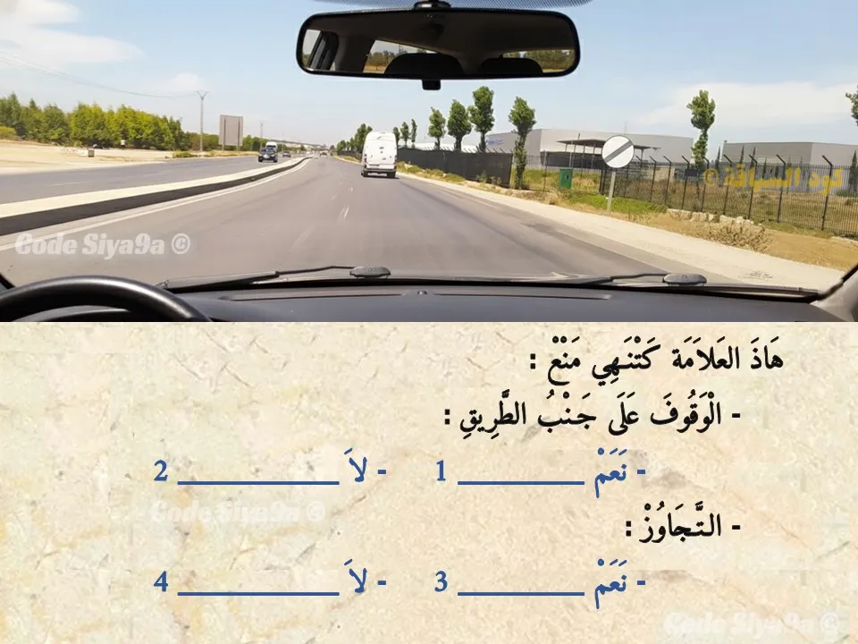
بيّن الجواب
الجواب الصحيح: 2 و 3
هذه العلامه ديال نهايه المنع.
- كتعلن على هذه العلامه على نهايه جميع انواع المنع اللي سبق الاعلان عليها واللي مفروضه على جميع المركبات في حاله حركه.
- المركبه في حاله حركه كيكون مفروض عليهم عدم استعمال المنبه الصوتي، المنع ديال التجاوز ، والمنع ديال تحديد السرعه.
- اما العلامه ديال نهايه الوقوف والتوقوف فكتكون عندها علامه ديالها خاصه.
السؤال 37
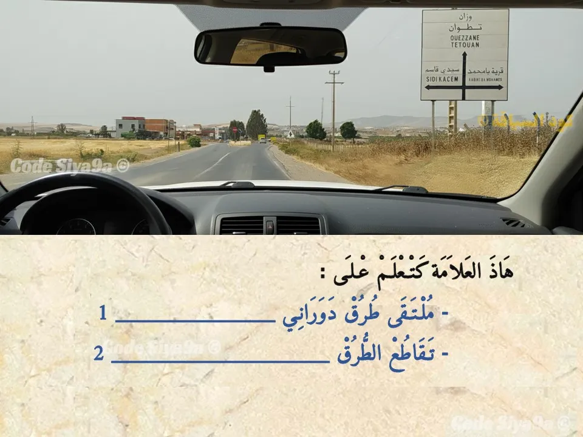
بيّن الجواب
الجواب الصحيح: 2
هذا العلامة ديال الاتجاه . كتعلم على تقاطع (ملتقى) طرق مع تبين الاتجاه ديال كل طريق فين غادي تمشي .
السؤال 38
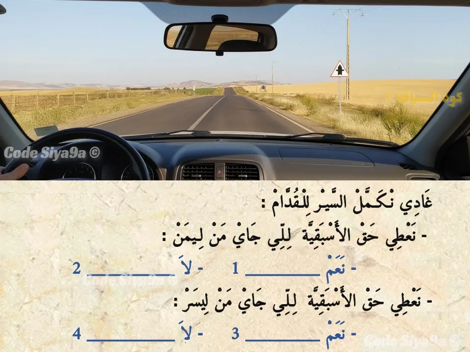
بيّن الجواب
الجواب الصحيح: 2 و 4
هذه العلامه ديال خطر كتعلم على طريق ذات اسبقيه المرور مع طريق اقل اهميه. يعني طريق كبيره في صغيره.
- وهذاك يعني انني في الطريق ذات اسبقيه المرور. يعني انا اللي عندي حق الاسبقيه في هذا ملتقى الطرق.
- في هذه الحاله هذه من الواجب علي ننقص من السرعه ونرد البال اللي جاي من اليمن و اللي جاي من اليسار.
السؤال 39
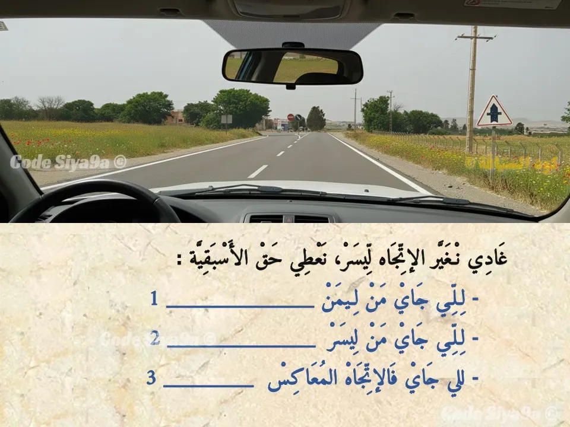
بيّن الجواب
الجواب الصحيح: 3
هذه العلامه ديال خطر كتعلم على طريق ذات اسبقيه المرور مع طريق اقل اهميه. يعني طريق كبيره في صغيره.
- وهذاك يعني انني في الطريق ذات اسبقيه المرور. يعني انا اللي عندي حق الاسبقيه في هذا ملتقى الطرق.
- في هذه الحاله هذه من الواجب علي ننقص من السرعه ونرد البال اللي جاي من اليمن و اللي جاي من اليسار.
- في هذه الحاله هذه حيت غادي نغير الاتجاه على اليسار واجب علي نعطي حق الاسبقيه اللي جاي في الاتجاه المعاكس.
السؤال 40
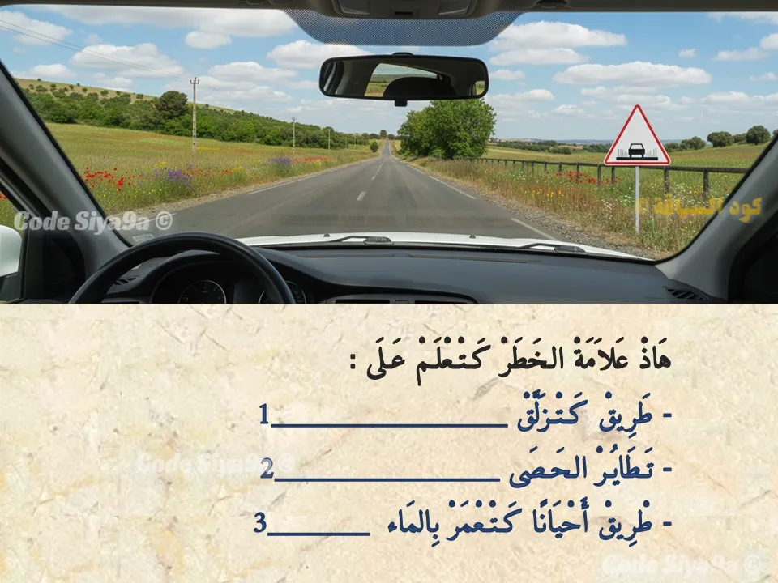
بيّن الجواب
الجواب الصحيح: 3
هذا علامه الخطر كتعلم على طريق احيانا كتعمر بالماء ، خصوصا فصل الشتاء في هذه الحاله هذه واجب علي ننقص من السرعه ونرد البال.